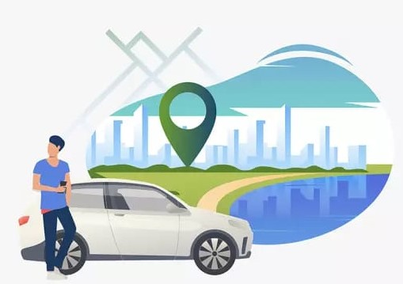

EXPERT SUGGESTED
when a driver suggests a route, they are
providing their recommendation on the best way to reach a destination based on their understanding of the
roads and current conditions

DISCOVER PLACES
widely recognized locations that have gained
popularity and are often visited by tourists

risk free route
rapid route